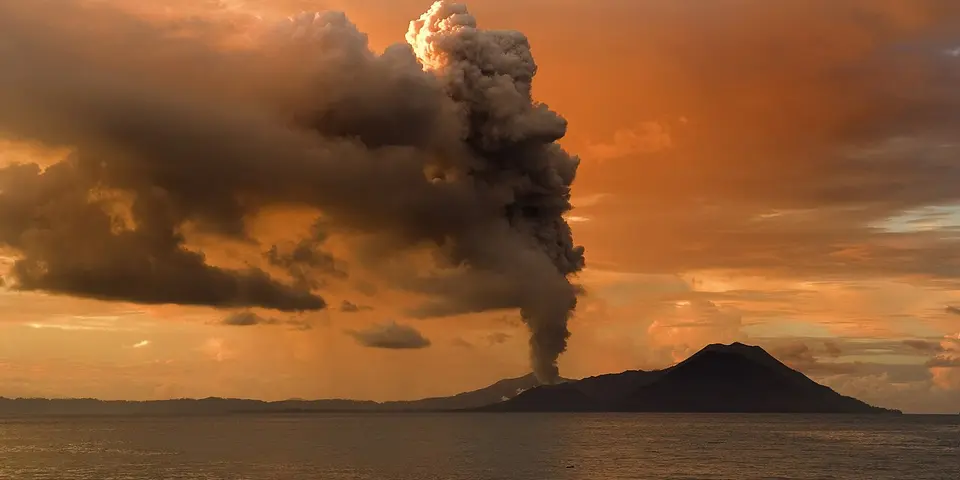

Oceania
Papua New Guinea on a budget
Hundreds of cultures, highland festivals and remote treks, hard and costly to reach, with real security risks best handled with local guides.
Photo: Taro Taylor edit by Richard Bartz, CC BY 2.0, via Wikimedia Commons

Classic route
Port Moresby, the Kokoda Track or the Highlands, then the Sepik River. 2 weeks.
Plan a trip to Papua New Guinea
How much 8 places in Papua New Guinea cost
Daily budgets per person in US dollars: a hostel dorm or simple guesthouse, local food, local transport and the usual entry fees.
-
Kokoda Track
A 96 km WWII trail over the Owen Stanley Range, through jungle villages and over steep, muddy ridges.
Bed $20 · Food $15 · Getting around $20 · Extras $30
Budget tip: Treks run with licensed operators, usually 8 to 10 days. Train beforehand, as the trail is much tougher than its length suggests.
$85per day -
Mount Hagen
A highland market town famed for the Mount Hagen Show, where clans gather in feathers and face paint for a huge sing-sing.
Bed $40 · Food $15 · Getting around $10 · Extras $15
Budget tip: The show is held in August; book accommodation months ahead and arrange transport through your guesthouse rather than travelling alone.
$80per day -
Sepik River
Towering spirit houses and woodcarving villages along a wide, slow jungle river in remote northern Papua New Guinea.
Bed $30 · Food $12 · Getting around $20 · Extras $15
Budget tip: Travel by motor canoe with a local guide. Village guesthouses are basic, so bring a mosquito net and cash.
$77per day -
Goroka
Meet the Asaro Mudmen and watch the Goroka Show, the country's biggest sing-sing, with hundreds of performers in traditional dress.
Bed $40 · Food $15 · Getting around $10 · Extras $15
Budget tip: The Goroka Show is in September; arrange a local guide through your guesthouse and avoid walking around after dark.
$80per day -
Rabaul
A town half-buried by volcanic ash, with Japanese WWII tunnels, hot springs and the smoking Tavurvur volcano across the bay.
Bed $40 · Food $15 · Getting around $10 · Extras $10
Budget tip: Kokopo is the safer, easier base; hire a driver for the day to see Rabaul and the volcano observatory lookout.
$75per day -
Madang
Harbour town of tall rain trees and fruit bats, with Second World War wreck dives, island snorkelling and coastal villages along the North Coast road.
Bed $40 · Food $15 · Getting around $8 · Extras $15
Budget tip: Arrange boat trips through your guesthouse and avoid walking around after dark; ask locals before using PMV minibuses, the cheapest transport.
$78per day -
Tufi
Tropical fjords lined with rainforest, where you stay in village guesthouses, snorkel coral reefs and dive WWII wrecks.
Bed $50 · Food $0 · Getting around $10 · Extras $20
Budget tip: Village guesthouses include meals and are much cheaper than the dive resort. Bring cash, as there are no banks.
$80per day -
Kimbe Bay
Coral-rich bay in West New Britain with seamounts, giant sea fans and among the highest reef species counts on earth, below active volcanoes.
Bed $50 · Food $15 · Getting around $15 · Extras $40
Budget tip: Guesthouses in Kimbe town cost less than the nearby dive resort and can arrange snorkel trips; book dive packages well ahead.
$120per day
Know before you go
Papua New Guinea on a budget: the basics
Currency
$1 = 4.53 PGK
Papua New Guinean kina
| Dollars to PGK | PGK to dollars | ||
|---|---|---|---|
| $1 | 4.53 PGK | 1 PGK | $0.221 |
| $5 | 22.67 PGK | 5 PGK | $1.10 |
| $10 | 45.35 PGK | 10 PGK | $2.21 |
| $20 | 90.69 PGK | 50 PGK | $11.03 |
| $50 | 227 PGK | 100 PGK | $22.05 |
| $100 | 453 PGK | 500 PGK | $110 |
A typical day here (about $80) is roughly 360 PGK.
Mid-market rate on 2026-10-05. Cash machines and exchange desks pay a little less.
Getting around
Domestic flights on Air Niugini and PNG Air are the main way between regions, since no road links Port Moresby with the Highlands. Local minibuses called PMVs run in towns and on the Highlands Highway, but in Port Moresby it's safer to use arranged transport. Book the Kokoda Track with a licensed operator well ahead, and arrange Sepik River trips through a local guide.
Where to sleep
Budget hotels in Port Moresby are expensive, so guesthouses, mission stays and village homestays are the cheaper options elsewhere. On the Sepik and in the Highlands, simple village guesthouses are the norm.
What to eat
- Mumu: pork and vegetables cooked on hot stones underground
- Kaukau: sweet potato, the Highlands staple food
- Sago: starch from the sago palm, a staple along the Sepik
- Aibika: leafy greens often cooked in coconut milk
Money
Cash in kina is needed for almost everything outside hotels, and ATMs are found only in larger towns, so withdraw before heading to remote areas. Tipping isn't customary, and haggling isn't common in markets.
Phone data
Digicel has the widest network, and SIMs need registration with your passport; coverage is fine in towns but limited or absent in remote areas and on trails.
Heads up
Avoid walking around Port Moresby and Lae after dark, and use transport arranged by your hotel or guide.
Papua New Guinea travel: quick answers
How much does a day in Papua New Guinea cost on a budget?
About $80 a day for one person, from $75 in Rabaul to $120 in Kimbe Bay. That covers a hostel dorm or simple guesthouse, local food, local transport and the usual entry fees, so a week runs about $560 before flights.
When is the best time to visit Papua New Guinea?
May to October is the best time, with the most reliable weather for getting around.
What is the cheapest place to visit in Papua New Guinea?
Rabaul, at about $75 a day. A town half-buried by volcanic ash, with Japanese WWII tunnels, hot springs and the smoking Tavurvur volcano across the bay.
How long do you need in Papua New Guinea?
Port Moresby, the Kokoda Track or the Highlands, then the Sepik River. 2 weeks.
How much is $1 in Papua New Guinea?
One US dollar is about 4.53 Papua New Guinean kina (PGK), going by the mid-market rate on 2026-10-05. So $20 is roughly 90.69 PGK, and a typical budget day of $80 comes to about 360 PGK.
How do you get around Papua New Guinea cheaply?
Domestic flights on Air Niugini and PNG Air are the main way between regions, since no road links Port Moresby with the Highlands. Local minibuses called PMVs run in towns and on the Highlands Highway, but in Port Moresby it's safer to use arranged transport. Book the Kokoda Track with a licensed operator well ahead, and arrange Sepik River trips through a local guide.
What food should you try in Papua New Guinea?
Mumu, pork and vegetables cooked on hot stones underground. Kaukau, sweet potato, the Highlands staple food. Sago, starch from the sago palm, a staple along the Sepik. Aibika, leafy greens often cooked in coconut milk.
Is it safe to travel to Papua New Guinea?
Many governments advise a high degree of caution in Papua New Guinea because of crime, especially in cities, and tribal violence in parts of the Highlands. Check your government's current travel advice before planning a trip.
Planning around the seasons? See where to go in May, or compare the cheapest countries nearby.
Similar budgets nearby
- Australia $77/day
- New Zealand $76/day
- Vanuatu $72/day
- Fiji $65/day